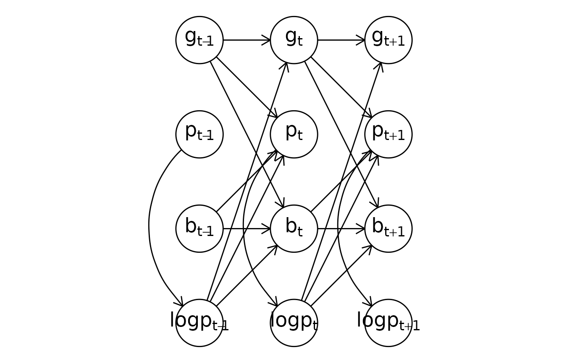

Plot a snapshot of the model structure at a specific time point with a window of the highest-order lag dependency both into the past and the future as a directed acyclic graph (DAG). Only response variables are shown in the plot. This function can also produce a TikZ code of the DAG to be used in reports and publications.
Usage
# S3 method for class 'dynamiteformula'
plot(
x,
show_auxiliary = TRUE,
show_covariates = FALSE,
tikz = FALSE,
vertex_size = 0.25,
label_size = 18,
...
)Arguments
- x
[
dynamiteformula]
The model formula.- show_auxiliary
[
logical(1)]
Should deterministic auxiliary responses be shown in the plot? IfFALSE, the vertices corresponding to such responses will be projected out. The default isTRUE.- show_covariates
[
logical(1)]
Should unmodeled covariates be shown in the plot? The defaults isFALSE.- tikz
[
logical(1)]
Should the DAG be returned in TikZ format? The default isFALSEreturning aggplotobject instead.- vertex_size
[
double(1)]
The size (radius) of the vertex circles used in theggplotDAG. (The vertical and horizontal distances between vertices in the grid are 1, for reference.)- label_size
[
double(1)]
Font size (in points) to use for the vertex labels in theggplotDAG.- ...
Not used..
See also
Drawing plots
plot.dynamitefit()
Examples
data.table::setDTthreads(1) # For CRAN
multichannel_formula <- obs(g ~ lag(g) + lag(logp), family = "gaussian") +
obs(p ~ lag(g) + lag(logp) + lag(b), family = "poisson") +
obs(b ~ lag(b) * lag(logp) + lag(b) * lag(g), family = "bernoulli") +
aux(numeric(logp) ~ log(p + 1))
# A ggplot
plot(multichannel_formula)

# TikZ format
plot(multichannel_formula, tikz = TRUE)
#> [1] "% Preamble\n\\usepackage{tikz}\n\\usetikzlibrary{positioning, arrows.meta, shapes.geometric}\n\\tikzset{%\n semithick,\n >={Stealth[width=1.5mm,length=2mm]},\n obs/.style 2 args = {\n name = #1, circle, draw, inner sep = 8pt, label = center:$#2$\n }\n}\n% DAG\n\\begin{tikzpicture}\n \\node [obs = {v1}{g_{t - 1}}] at (-1, 4) {\\vphantom{0}};\n \\node [obs = {v2}{p_{t - 1}}] at (-1, 3) {\\vphantom{0}};\n \\node [obs = {v3}{b_{t - 1}}] at (-1, 2) {\\vphantom{0}};\n \\node [obs = {v4}{logp_{t - 1}}] at (-1, 1) {\\vphantom{0}};\n \\node [obs = {v5}{g_{t + 1}}] at (1, 4) {\\vphantom{0}};\n \\node [obs = {v6}{p_{t + 1}}] at (1, 3) {\\vphantom{0}};\n \\node [obs = {v7}{b_{t + 1}}] at (1, 2) {\\vphantom{0}};\n \\node [obs = {v8}{logp_{t + 1}}] at (1, 1) {\\vphantom{0}};\n \\node [obs = {v9}{g_{t}}] at (0, 4) {\\vphantom{0}};\n \\node [obs = {v10}{p_{t}}] at (0, 3) {\\vphantom{0}};\n \\node [obs = {v11}{b_{t}}] at (0, 2) {\\vphantom{0}};\n \\node [obs = {v12}{logp_{t}}] at (0, 1) {\\vphantom{0}};\n \\draw [->] (v1) -- (v9);\n \\draw [->] (v4) -- (v9);\n \\draw [->] (v1) -- (v10);\n \\draw [->] (v4) -- (v10);\n \\draw [->] (v3) -- (v10);\n \\draw [->] (v3) -- (v11);\n \\draw [->] (v4) -- (v11);\n \\draw [->] (v1) -- (v11);\n \\draw [->] (v9) -- (v5);\n \\draw [->] (v12) -- (v5);\n \\draw [->] (v9) -- (v6);\n \\draw [->] (v12) -- (v6);\n \\draw [->] (v11) -- (v6);\n \\draw [->] (v11) -- (v7);\n \\draw [->] (v12) -- (v7);\n \\draw [->] (v9) -- (v7);\n \\draw [->] (v10) to[bend right=45] (v12);\n \\draw [->] (v2) to[bend right=45] (v4);\n \\draw [->] (v6) to[bend right=45] (v8);\n\\end{tikzpicture}"